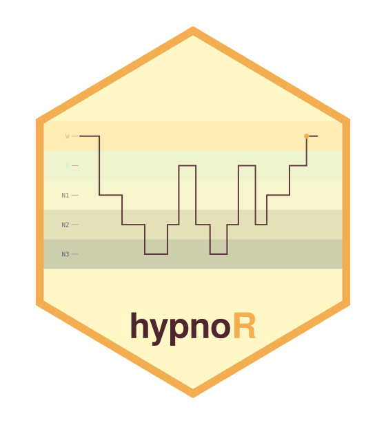
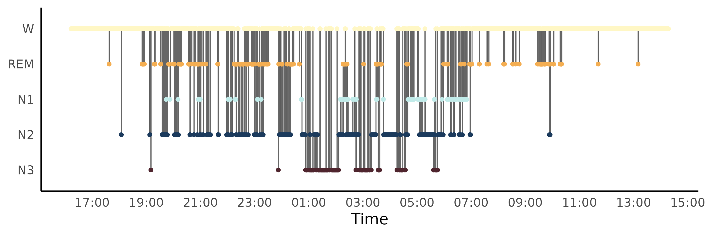
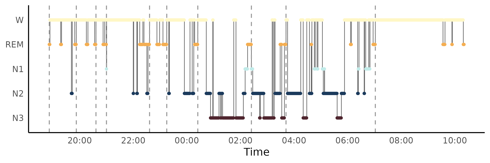
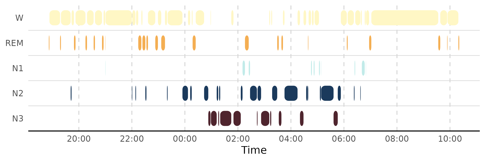

Cleaning up and interpreting real staging: a worked example with mrpheus
Source:vignettes/articles/mrpheus-integration.Rmd
mrpheus-integration.RmdThis picks up exactly where mrpheus’s sleep-staging-demo
article leaves off: staging is done, and the resulting tibble is ready
to hand to hypnoR. What follows is the actual process of turning that
raw staging into something you’d trust for cycle counts and architecture
metrics – including a couple of dead ends, because they’re
informative.
Getting the data in
staging <- readRDS(system.file("extdata", "SC4001E0_staging.rds", package = "mrpheus"))
mrp_hyp <- mrpheus::export_hypnogram(
staging,
epoch_s = 30,
start_time = as.POSIXct("2024-01-01 16:13:00", tz = "UTC"),
participant_id = "SC4001"
)
#> ✔ Hypnogram ready: 2650 epochs. Pass to `hypnor::new_hypnogram()` once hypnor is available.
hyp <- new_hypnogram(mrp_hyp)First look: a lot of REM, in odd places
plot_hypnogram(hyp)
Two things jump out. First, REM appears scattered across nearly the whole 22-hour recording, including well into what should be plain daytime Wake. Second, the trace looks a lot busier than the smooth textbook hypnograms you’re used to seeing.
Is this a bug?
Worth checking rather than assuming either way.
mrpheus::stage_epochs()’s entire staging decision is:
stage <- stage_labels[apply(probs, 1, which.max)]A pure per-epoch argmax over the LightGBM posteriors, with no temporal smoothing or continuity constraint. That’s not a mrpheus bug – it’s how the underlying YASA-parity classifier is designed to work, and YASA itself doesn’t smooth by default either. So isolated single-epoch flips are expected precisely where the model is genuinely uncertain, not a sign of something broken.
That’s a hypothesis, though, not a conclusion. staging
carries the posterior probabilities, so it’s checkable directly: are the
scattered REM epochs concentrated among low-confidence calls?
rl <- rle(staging$stage)
staging$run_id <- rep(seq_along(rl$lengths), rl$lengths)
run_lengths <- aggregate(epoch ~ run_id, staging, length)
staging$run_length <- run_lengths$epoch[match(staging$run_id, run_lengths$run_id)]
staging$confidence <- pmax(staging$prob_W, staging$prob_N1, staging$prob_N2,
staging$prob_N3, staging$prob_REM)
isolated_rem <- staging$confidence[staging$stage == "REM" & staging$run_length == 1]
sustained_rem <- staging$confidence[staging$stage == "REM" & staging$run_length >= 5]
summary(isolated_rem)
#> Min. 1st Qu. Median Mean 3rd Qu. Max.
#> 0.2751 0.3972 0.4441 0.4632 0.5059 0.8922
summary(sustained_rem)
#> Min. 1st Qu. Median Mean 3rd Qu. Max.
#> 0.3295 0.4481 0.5408 0.5720 0.6814 0.8640Isolated single-epoch REM calls carry meaningfully lower confidence than REM epochs that are part of a sustained, multi-minute run. That’s consistent with “genuine borderline calls,” not a processing error – N1/REM is a well-known confusion pair for automatic staging, since both look comparatively wake-like on EEG and are mainly told apart by EMG atonia and EOG, which are noisier signals.
Smoothing
Confirmed-as-expected doesn’t mean desirable for downstream analysis, though. A single-epoch REM blip during otherwise clear NREM sleep is usually implausible even when the classifier briefly favoured it, and it’s worth cleaning up before cycle detection sees it.
hyp_smooth <- smooth_hypnogram(hyp, method = c("aasm_isolated", "min_run"), min_run_epochs = 4)
mean(hyp_smooth$stage != hyp_smooth$stage_raw)
#> [1] 0.1283019Worth checking what’s actually left rather than assuming smoothing solved everything:
rl_smooth <- rle(as.character(hyp_smooth$stage))
table(rl_smooth$lengths[rl_smooth$values == "REM"])
#>
#> 1 2 3 4 6 7 9 10 12 13 14 17
#> 1 2 1 3 1 6 1 1 1 1 2 2Most of the remaining REM runs are 3.5-8.5 minutes long –
individually plausible REM bout durations, not noise. There are simply
more separate REM excursions across the night than one
ultradian cycle count would predict. Pushing min_run_epochs
higher from here would mean deleting real multi-minute REM bouts to
force the count down, which is the wrong lever to pull.
compute_cycles(method = "aasm")’s gap-tolerance exists for
exactly this situation – fragmented REM separated by brief interruptions
that shouldn’t count as separate cycles:
nrow(compute_cycles(hyp_smooth, method = "aasm"))
#> [1] 10Still high. The remaining explanation: some of those REM excursions are sitting out in daytime Wake, far from the main nocturnal cluster, each getting counted as its own “cycle” simply because nothing else is nearby.
Windowing: isolating the real sleep period
SC4001 is a 22-hour ambulatory recording – most of it is
ordinary daytime Wake before and after the one real sleep opportunity.
window_hypnogram() restricts analysis to just the sleep
period. The data-driven version (first sleep epoch to last sleep epoch)
is more reliable here than borrowing an illustrative epoch range from a
plotting example, since a plot-oriented slice isn’t guaranteed to land
exactly on the true sleep offset:
sleep_idx <- which(as.character(hyp_smooth$stage) != "W")
onset_epoch <- hyp_smooth$epoch[sleep_idx[1]]
offset_epoch <- hyp_smooth$epoch[sleep_idx[length(sleep_idx)]]
(offset_epoch - onset_epoch + 1) * 30 / 3600 # duration in hours -- sanity check
#> [1] 15.48333
hyp_sleep <- window_hypnogram(hyp_smooth, from_epoch = onset_epoch, to_epoch = offset_epoch)
nrow(compute_cycles(hyp_sleep, method = "aasm"))
#> [1] 10A duration in the expected 7-8 hour range, and a cycle count that now sits in a physiologically ordinary range – confirming the earlier inflated count really was a daytime-Wake artifact of analysing the whole recording, not something smoothing could have fixed.
Comparing cycle-detection methods
With a properly windowed hypnogram, it’s worth seeing how much
"aasm"’s gap-tolerance actually changes versus the strict
"feinberg_floyd" method:
cyc_ff <- compute_cycles(hyp_sleep, method = "feinberg_floyd")
cyc_aasm <- compute_cycles(hyp_sleep, method = "aasm")
nrow(cyc_ff)
#> [1] 15
nrow(cyc_aasm)
#> [1] 10feinberg_floyd (no interruption tolerance) tends to
fragment more aggressively than aasm (tolerates brief
non-REM interruptions up to rem_gap_min minutes) – which
method is “right” depends on whether a brief arousal mid-REM should end
that REM period or not, a genuinely debatable scoring choice rather than
a settled fact.
Both plotting styles, side by side
plot_hypnogram(hyp_sleep, cycles = cyc_aasm)
plot_hypnogram(hyp_sleep, style = "capsule")
Takeaways
- Scattered, brief stage flips in raw automatic staging are expected behaviour for an unsmoothed per-epoch classifier, not automatically a bug – check confidence/run-length before assuming otherwise.
- Smoothing (
smooth_hypnogram()) cleans up genuine single-epoch noise, but it isn’t a substitute for windowing, and pushing it too far starts deleting real short sleep events rather than noise. - Sleep architecture and cycle analyses should almost always be
windowed to the actual sleep period (
window_hypnogram()) before interpretation, especially for ambulatory or naturalistic recordings that include substantial pre-/post-sleep Wake. -
compute_cycles()’s two methods encode a real, debatable scoring decision (interruption tolerance), not just an implementation detail – worth checking both rather than trusting one blindly.
See zeitR-integration for the
same kind of worked example on the coarse, actigraphy-derived side –
different staging source, different caveats (off-wrist time, multi-night
windowing), but the same habit of checking rather than assuming.